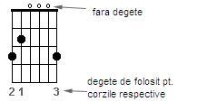
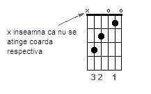
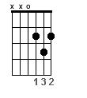

Acordurile G, C si D
-
Deci ati hotarat ca vreti sa mergem impreuna pe acest drum de invatare a chitarei.
Pentru a putea studia oricare dintre aceste lectii avem nevoie de cateva lucruri:
- o chitara acustica sau electrica fara efecte
- o pana (recomandat dar nu obligatoriu); ideea este ca la inceput poate fi dificil sa cantati numai cu degetele fara pana. Cum simtiti ca e natural, asa faceti
- rabdare si vointa.
In principiu pentru inceput ar fi bine sa cantati cu o pana medie, subtire. Mai tarziu, puteti incerca mai multe grosimi si vedeti care sunet va place cel mai mult.
este nevoie sa aveti rabdare cu voi in invatare, pentru ca nu o sa sune bine din prima. Vointa pentru ca uneori degetele o sa doara si poate vreti sa abandonati. Trebuie sa aveti puterea sa continuati. 15 minute pe zi de exercitiu sunt suficiente pentru a se lega lucrurile. In general sunt mai bune 15 minute pe zi, decat o ora la 4 zile.
In aceasta lectie vom invata numele corzilor, doua metode de acordare, cum sa tinem pana, numele notelor, 3 acorduri de baza si aplicarea lor in 3 cantece romanesti si unul strain.
Numele Corzilor
-
Notele muzicale sunt niste modalitati de reprezentare a sunetului, astfel incat doi muzicieni sa se poata intelege intre ei. Avem 7 note de baza denumite in doua standarde:
- Do, Re, Mi ,Fa, Sol, La, Si
- C, D, E, F, G, A, B Fie ca spun Re sau D e acelasi lucru. Cel mai des cand vorbim despre chitara in zilele noastre veti regasi cel de-al doilea standard. Chitara in acordaj standard are urmatoarele note de sus in jos: E, A, D, G, B, E.
- Tuner: se poate folosi un tuner din comert sau un program ca acesta:
Varianta pentru Desktop
Varianta pentru Mobil - Metoda comparatiei sunetelor:
- se ia ca referinta coarda de sus;
- se apasa tasta a 5-a si se compara sunetul obtinut cu sunetul corzii urmatoare; ele trebuie sa fie aproximativ identice; cand au ajuns identice avem urmatoarele 2 note: E pe cea de sus si E + 5 pe cea de a doua adica A. De retinut E+5=A;
- se apasa tasta a 5-a de pe coarda A si se repeta procesul cu urmatoarea. De retinut: A+5=D;
- se apasa tasta a 5-a de pe coarda D si se repeta procesul cu urmatoarea. De retinut: D+5=G;
- se apasa tasta a 4-a de pe coarda G si se repeta procesul cu urmatoarea. De retinut: G+4=B;
- se apasa tasta a 5-a de pe coarda B si se repeta procesul cu ultima coarda. De retinut: B+5=E.
Avem 2 metode de acordare:
Folosirea degetelor in acordul G

Folosirea degetelor in acordul C

Folosirea degetelor in acordul D

Link-uri cu tabulaturile melodiilor cantate:
Phoenix - Vremuri
Stefan Hrusca - Copacul Indragostit
Antract - Esti Frumoasa
Booney M - Rivers of Babylon